Studio Cards / การ์ดแยกหมวด
สแกนเครื่องมือ 4 หมวดพร้อมกัน เหมาะกับงานประจำ

สแกนเครื่องมือ 4 หมวดพร้อมกัน เหมาะกับงานประจำ
โฟกัสช่องค้นหาและคำสั่ง เหมาะกับผู้ใช้ที่รู้ว่าต้องการทำอะไร
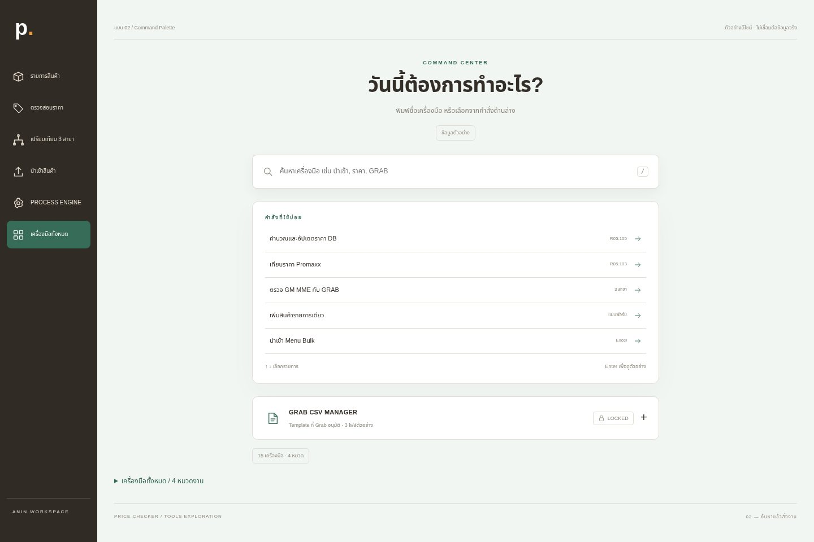
เน้นงานสำคัญด้วยการ์ดขนาดใหญ่ สลับบล็อกงานรอง

จัดเครื่องมือตามลำดับการทำงาน 3 ขั้น
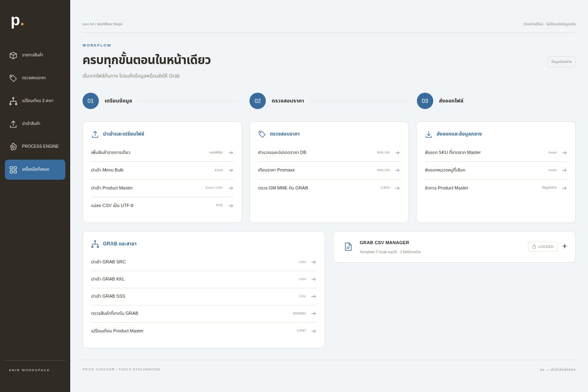
แถบหมวดด้านบนลดจำนวนปุ่มที่เห็นพร้อมกัน

ตัวเลขตัวอย่างและงานที่ใช้บ่อยอยู่เหนือหมวดเครื่องมือ
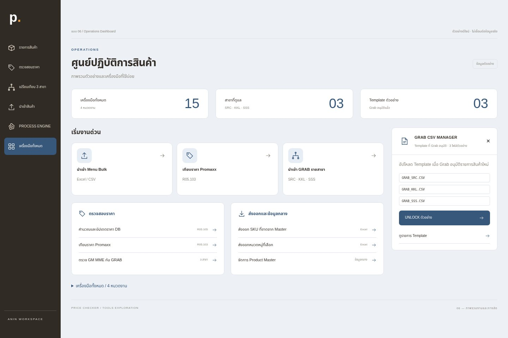
คอลัมน์แนวตั้งสำหรับเตรียมไฟล์ ตรวจราคา และส่งมอบ
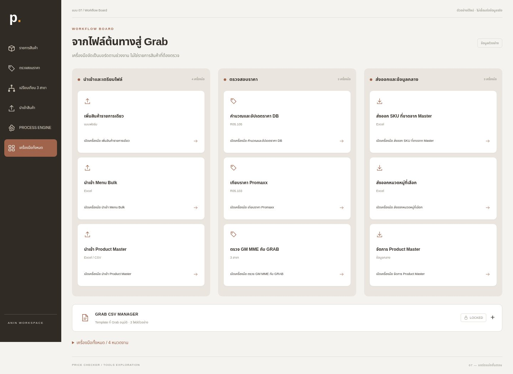
รายการแถวกระชับ มีรหัสไฟล์และหมวดกำกับ
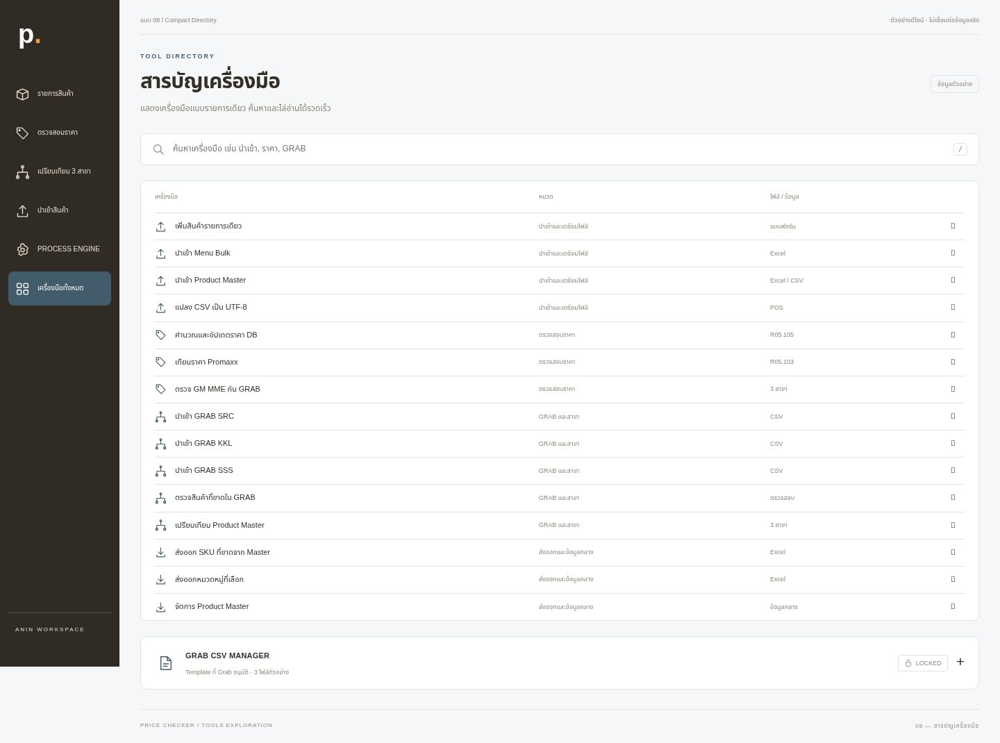
พื้นที่ทำงานสีเข้มพร้อมคำสั่งและทางลัดแป้นพิมพ์
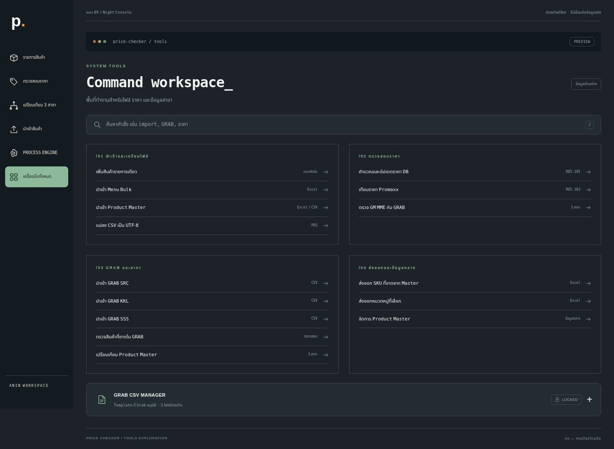
วางเครื่องมือด้านซ้าย และจัดการ Template ด้านขวา
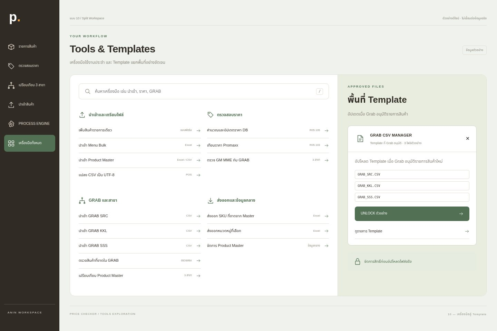
ใช้แท็บ SRC / KKL / SSS ก่อนเลือกเครื่องมือของสาขานั้น

ตารางปุ่มไอคอน Outline พร้อมชื่อที่อ่านง่าย

ตัวอักษรเด่นพร้อมหมวดแบบดัชนี เน้นพื้นที่ว่าง
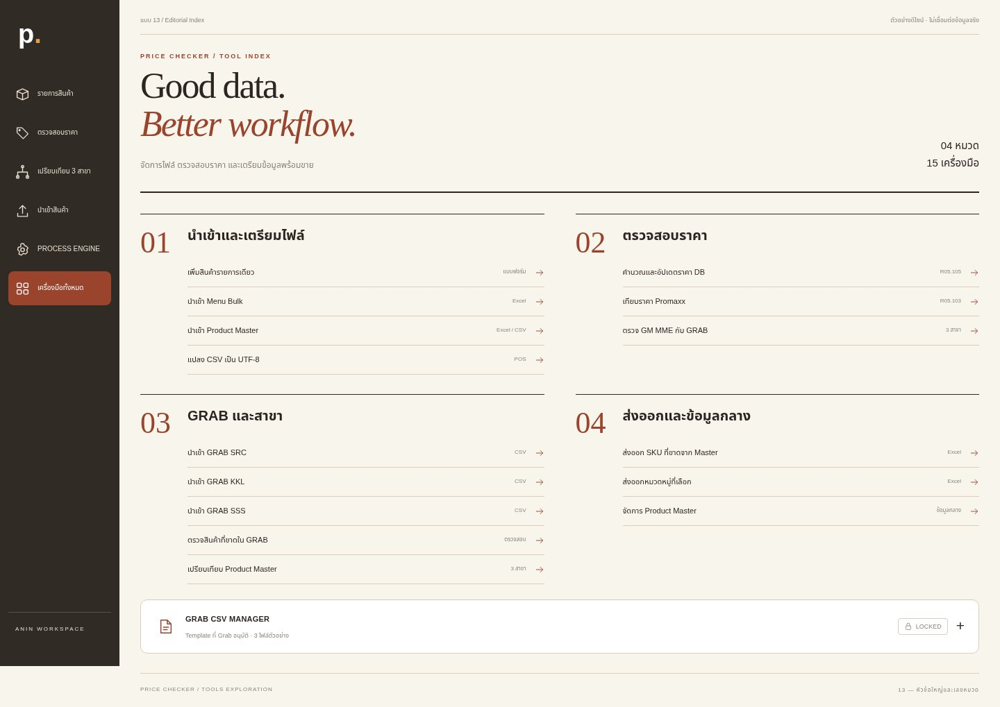
อธิบายเป้าหมายแต่ละขั้นก่อนแสดงเครื่องมือ

เลือกเครื่องมือด้านซ้าย อ่านรายละเอียดและเริ่มงานด้านขวา

ริบบอนคำสั่งด้านบนและพื้นที่อัปโหลดกลางหน้า
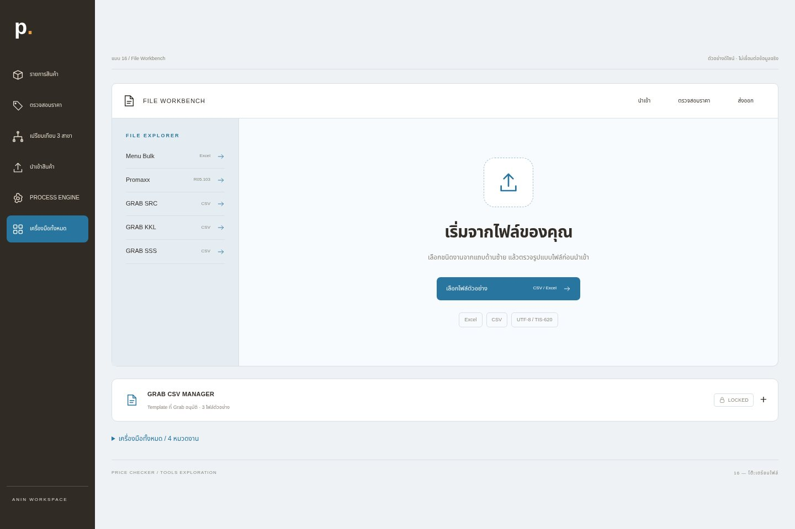
งานนำเข้า ราคา และส่งออกอยู่คนละหน้าสมุด

ปุ่มใหญ่ พับหมวดได้ เหมาะกับแท็บเล็ตและมือถือ
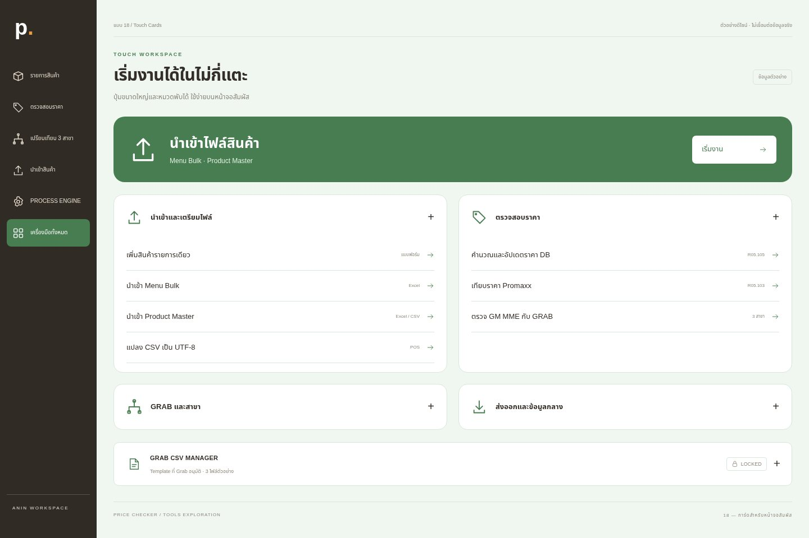
มีจุดเริ่มงานเดียวชัดเจน แล้วค่อยเลือกงานอื่น
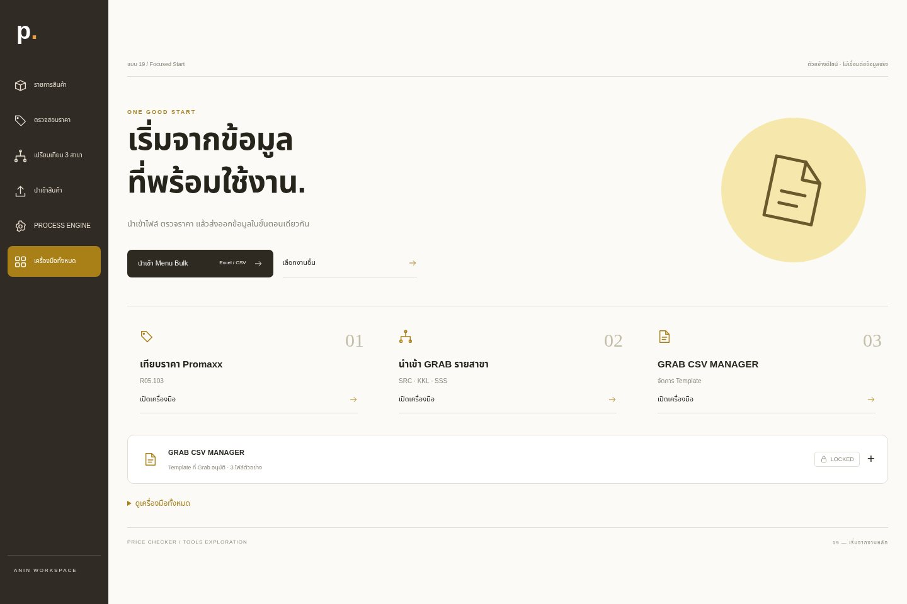
นำทางด้วยแผงโมดูล พร้อมพื้นที่จัดการและสถานะไฟล์